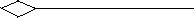
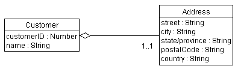
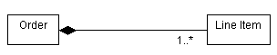
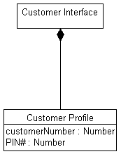
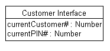

Artifacts >
Artifacts >
 Analysis & Design Artifact Set >
Analysis & Design Artifact Set >
 Design Model... >
Design Model... >
 Design Model >
Design Model >
 Guidelines >
Aggregation
Guidelines >
Aggregation
Artifacts >
Analysis & Design Artifact Set >
Design Model... >
Design Model >
Guidelines >
Aggregation
Guidelines:
|
|
 Aggregation |
An aggregation is a special form of association that models a whole-part relationship between an aggregate (the whole) and its parts. |
Aggregation is used to model a compositional relationship between model elements. There are many examples of compositional relationships: a Library contains Books, within a company Departments are made-up of Employees, a Computer is composed of a number of Devices. To model this, the aggregate (Department) has an aggregation association to the its constituent parts (Employee).
A hollow diamond is attached to the end of an association path on the side of the aggregate (the whole) to indicate aggregation.
Example
In this example an Customer has an Address. We use aggregation because the two classes represent part of a larger whole. We have also chosen to model Address as a separate class, since many other kinds of things have addresses as well.

An aggregate object can hold other objects together.
An aggregation relationship that has a multiplicity greater than one established for the aggregate is called shared, and destroying the aggregate does not necessarily destroy the parts. By implication, a shared aggregation forms a graph, or a tree with many roots. Shared aggregations are used in cases where there is a strong relationship between two classes, so that the same instance can participate in two different aggregations.
Example
Consider the case where a person has a home-based business. Both the Person and the Business have an address; in fact it is the same address. The Address is an integral part of both the Person and the Business. Yet the Business may cease to exist, leaving the Person hopefully at the same address.
Note also that it is possible in this case to start off with shared aggregation, then convert to non-shared aggregation at a later date. The home-based business may grow and prosper, eventually moving into separate quarters. At this point, the Person and the Business no longer share the same address. As a result, the aggregation is no longer shared.

An example of shared aggregation.
Composition is a form of aggregation with strong ownership and coincident lifetime of the part with the aggregate. The multiplicity of the aggregate end (in the example, the Order) may not exceed one (i.e. it cannot be shared). The aggregation is also unchangeable, that is once established, its links cannot be changed. By implication, a composite aggregation forms a "tree" of parts, with the root being the aggregate, and the "branches" the parts.
A compositional aggregation should be used over "plain" aggregation when there is strong inter-dependency relationship between the aggregate and the parts; where the definition of the aggregate is incomplete without the parts. In the example presented below, it does make sense to even have an Order if there is nothing being ordered (i.e. Line Items). In some cases, this inter-dependency can be identified as early as analysis (as in the case with this example), but more often it is not until design that such decisions can be made confidently.
A solid filled diamond is attached to the end of an association path to indicate composition, as shown below:

An example of compositional aggregation
Example
In this example, the Customer Interface is composed of several other classes. In this example the multiplicities of the aggregations are not yet specified.

A Customer Interface object knows which Display, Receipt Printer, KeyPad, and Speaker objects belong to it.
A property of a class is something that the class knows about. As in the case of the Customer class shown above, one could choose to model the Address of the Customer as either a class, as we have shown it, or as a set of attributes of the class. The decision whether to use a class and the aggregation relation, or a set of attributes, depends on the following:
Example
In an Automated Teller Machine, the system must keep track of the current customer and their PIN, let us assume that the Customer Interface is responsible for this. This information may be thought of as "properties" of the class. This may done using a separate class, shown as follows:

Object properties modeled using Aggregation
The alternative, having the Customer Interface keep track of the current Customer and their PIN using attributes, is modeled as follows:

Object properties modeled using Attributes
The decision of whether to use attributes or an aggregation association to a separate class is determined based the degree of coupling between the concepts being represented: when the concepts being modeled are tightly connected, use attributes. When the concepts are likely to change independently, use aggregation.
Aggregation should be used only in cases where there is a compositional relationship between classes, where one class is composed of other classes, where the "parts" are incomplete outside the context of the whole. Consider the case of an Order: it makes no sense to have an order which is "empty" and consists of "nothing". The same is true for all aggregates: Departments must have Employees, Families must have Family Members, and so on.
If the classes can have independent identity outside the context provided by other classes, if they are not parts of some greater whole, then the association relationship should be used. In addition, when in doubt, an association more appropriate; aggregations are generally obvious, and choosing aggregation is only done to help clarify. It is not something that is crucial to the success of the modeling effort.
Sometimes, a class may be aggregated with itself. This does not mean that an instance of that class is composed of itself (this would be silly), it means that one instance if the class is an aggregate composed of other instances of the same class. In the case of self-aggregations, role names are essential to distinguish the purpose for the association.
Example
Consider the following self-aggregation involving the class Product:

In this case, a product may be composed of other products; if
they are, the aggregated products are called sub-products. The association is
navigable only from the aggregate to the sub-product; i.e. sub-products would
not know what products they are part of (since they may be part of many
products).
|
Rational Unified
Process
|